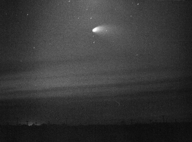
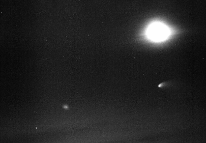

Comet Hale-Bopp
Two images from May 1997
These images were scanned using a Logitech PageScan Colour scanner at 300
DPI, from Kodak TMax 400 (push processed to 800) black-and-white prints.
Simple image processing was then carried out (JPEG to GIF conversion, scaling,
cropping) using PageScan Image Editor v1.2 and Graphic Workshop v1.1n.
The photos were short exposures taken from a tripod-mounted Pentax K1000
camera by David Benn from Aerodrome Road, Mallala, South Australia between
approximately 18:30 and 19:00 on May 9 1997.

Hale-Bopp, cloud, and moon glow
(135mm at f/5.6 for about 15 seconds)

Hale-Bopp, the overexposed crescent Moon, cloud (lower-left).
This image shows the angular size of the comet.
(70mm at f/3.5 for about 5 seconds)
Also see the Comet Hale-Bopp home page and the ASSA home page for more pictures and links.